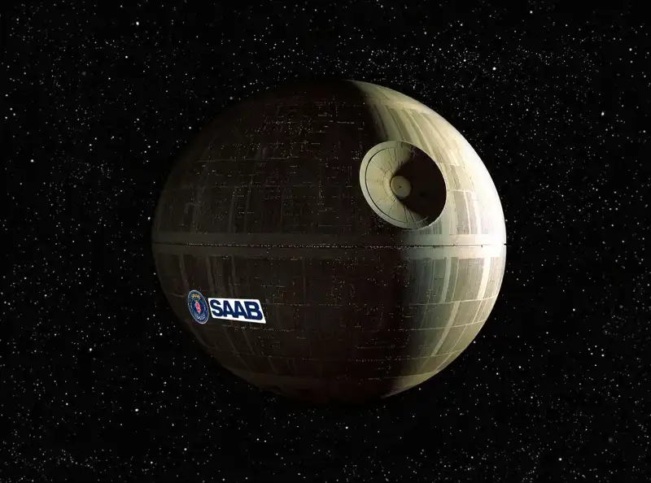

Artikel

Saabs senaste vapensystem: "en dödsstjärna"
Förra veckan kom beskedet att vapentillverkaren Saab har fått klartecken från regeringen att påbörja utvecklingen av Sveriges nyaste vapenplattform Rymdvapenstation 1 (eller Rvs 1). Systemets specifikationer är hemligstämplade, men källor inom branschen säger till Löken att det handlar om "en dödsstjärna". "Med Rvs 1 kommer Sveriges suveränitet aldrig att utmanas", berättar försvarsminister Pål Jonson. "Målbilden är att kunna radera en yta motsvarande Gotland vart som helst på jordklotet" fortsätter Jonson.
Men projektet har fått stark kritik från många håll. Ylva Jakobsson, ekonom på Saab, har gått ut offentligt på Twitter (numera känt som X) och berättat om förutsättningarna. I ett uppmärksammat inlägg skriver hon: "Det finns inte pengar att finansiera det här. Regeringen har varit tvungen att sälja en bra bit av Lappland till Norge för att ens nå de lägsta prisuppskattningarna. Det ryktas även om att statsministern personligen tagit SMS-lån."
Rösterna inom Försvarsmakten är splittrade. Överbefälhavare Michael Claesson (högsta chefen inom militären) vill gärna se vapnet på plats snarast. "Hotet från Öst måste vi göra något åt. Räckvidden som Rsv 1 skulle ge våra styrkor är nödvändig för att avskräcka", berättar han i ett mail till Löken. Men många andra menar att en sådan investering som Rvs 1 inte är värt det. "En rymdstation är känslig för både störningar och robotar", menar Bodil Lytelius, flygvapenöverste. "Nu när vi är med i Nato behövs inga sådana system".
Rymdvapenstation 1 beräknas i nuläget kosta cirka 42067 miljarder svenska kronor och vara funktionsdugligt till 2092.